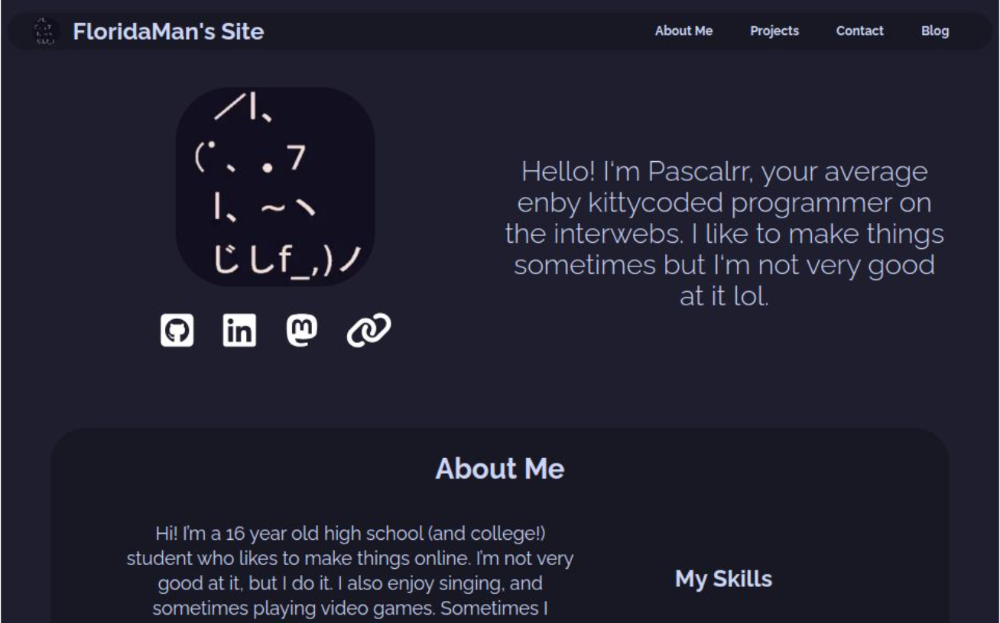
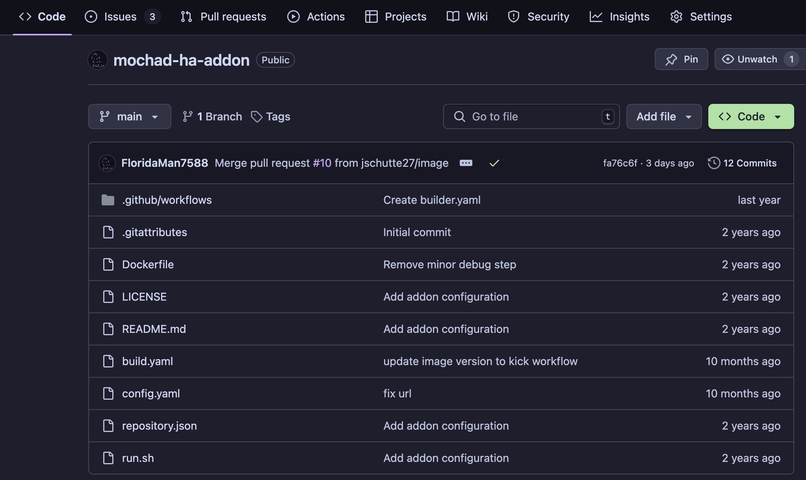
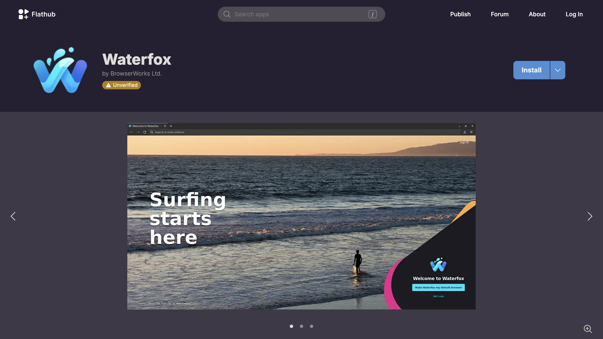

projects
a more thorough list of projects, writings, and other things i've contributed to.
-
Featured: My Website
Featured on the home page, my personal website is very similar to this one. It's a showcase of my ideas, projects, and some writing on my blog as well. I made it just for fun and to learn, and it has been constantly evolving as both a hobby project and experience for several years. I've learned React, a few frameworks, and Typescript all from this project.
 -
Featured: Mochad Home Assistant Addon
Featured on the home page, Mochad is a bridge between X10 smart devices and the TCP/IP layer on a Linux host. It bridges the gap with a software re-implementation of the API used by the CM15* and CM19A modules. The addon allows for easy use of these devices on the Home Assistant automation platform, enabling easy integration with other devices on your network, and simple automation configuration.
 -
Featured: Waterfox Flatpak
Featured on the home page, Waterfox is a web browser based off of Firefox and the Gecko HTML kit. It integrates privacy, speed and unique features into an accessible format built for the modern web environment. My contribution to the project extends the Linux package into a fully immutable, universal application package for any Linux system.
 -
DiscordJS Projects
DiscordJS is an extensible API wrapper for Discord, allowing for bots and other applications to interoperate between your code and the API. I've written several Discord bots for use in automation when moderating content and utilities for other reasons. I'm also currently working on a full-stack application that interacts with Discord through it's API.
-
Team1982 Robotics Code
Shawnee Mission Northwest's premiere robotics Team 1982, designs, builds and programs a robot to compete in the First Robotics Competition every year. As a student at SMNW, I am one of the leaders of the programming team for the upcoming 2025 FRC season. I have been working on the code to power a swerve-drive style drive train and several other motors and sensors.